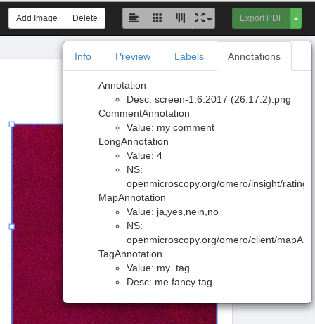
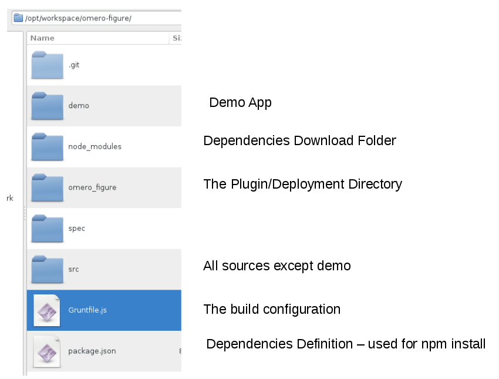
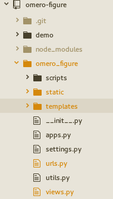
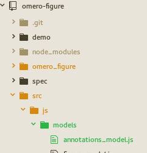
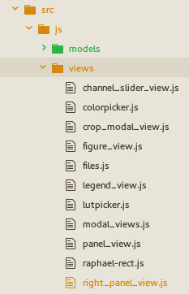
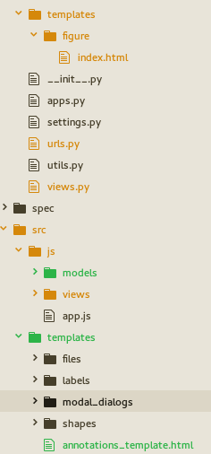
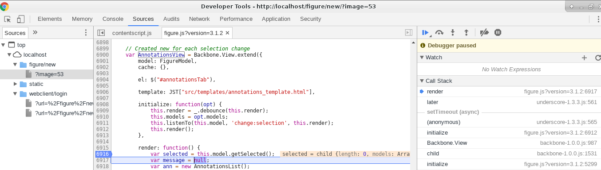
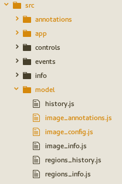
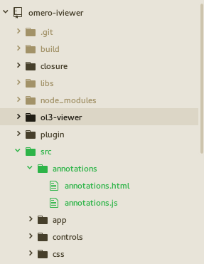
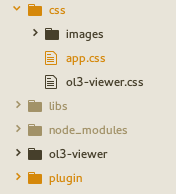

Web Apps Review
- Environment/Setup
- 'Best Practices/Design'
- Figure vs. IViewer
- Example Figure
- Example IViewer
- IViewer Details
- Q & A
Environment

'Minimal' Setup – directories
- app/static/app/app.js
- app/templates/app/index.html
static/app – contents?
- JS
- CSS
- Images
- Fonts
- Third Party Resources

app/templates/app/index.html
<html>
<head>
<link rel="stylesheet" type="text/css"
href=" {% static 'app_directoryr/css/app.css?version=1.1' %}" />
<script type="text/javascript"
src="{% static 'app_directory/app.js?version=1.1' %}">
</script>
<script type="text/javascript">
// optionally set parameters for app
window.SOME_APP_PARAM = …;
</script>
</head>
…
</html>
static/templates/index.html – iviewer
"Best Practices"
- Check in files unaffected by build in their respective target directories, e.g. index.html
- Build the rest and deploy into target dirs
- Optimize for both development and production
- Add suffix to resources to indicate version and avoid caching
- debugging/quicker builds for dev version
- leaner prod version
- fewer requests for immediately needed resources
- hosted libraries, e.g. jquery or bootstrap?
- glypicons vs. images?
- splitting up of code if framework, loader and setup allows for dynamic (down)loading and execution
Considerations
Omero Web resources (Api, Gateway) vs.
Plugin resources (views.py) vs.
Server-side extentions (Blitz Gateway)
- Code Reuse
- Stability/Breaking Potential across Versions
- Missing Functionality
- Release/Bugfix Cycles
- Cross origin implications (jsonp and cors)
Apps: Figure, IViewer
| figure | iviewer | |
|---|---|---|
| build | grunt | webpack (also loader) |
| js | jquery, backbone, underscore, rafael | jquery, aurelia, openlayers |
| css | bootstrap | bootstrap |
| git | https://github.com/ome/omero-figure | https://github.com/ome/omero-iviewer |
Figure & IViewer Examples - Pre-requisites
- Setup Omero Server & Web
- Check out respective Project from git
- add plugins (opt: deps) to PYTHONPATH
- run build/deploy
e.g. .bashrc (simple export would suffice)
TO_BE_ADDED_TO_PYTHONPATH=("/opt/workspace/omero-marshal" "/opt/workspace/omero-iviewer/plugin" "/opt/workspace/omero-figure")
for p in ${TO_BE_ADDED_TO_PYTHONPATH[@]}
do
COUNT=`echo $PYTHONPATH | grep $p | wc -c`
if [ $COUNT -eq 0 ]; then
export PYTHONPATH=$PYTHONPATH:$p
fi
done
Figure Example - adding tab

Figure Setup
Plugin - urls.py, views.py

urlpatterns = patterns(
'django.views.generic.simple',
...
url(r'^get_annotations/?$', views.get_annotations,
name='figure_get_annotations'))
@login_required()
def get_annotations(request, conn=None, **kwargs):
# get mandatory param image id
image_id = request.GET.get("image", None)
if image_id is None:
return JsonResponse(
{"error": "The image id is a mandatory parameter"})
# retrieve image object
img = conn.getObject("Image", image_id, opts=conn.SERVICE_OPTS)
if img is None:
return JsonResponse({"error": "Image not Found"}, status=404)
# iterate over annotations and marshal them
annotations = []
for ann in img.listAnnotations():
enc = omero_marshal.get_encoder(ann.OMERO_TYPE)
if enc is None:
enc = omero_marshal.get_encoder(omero.model.Annotation)
ann = enc.encode(ann)
if ann is not None:
annotations.append(ann)
return JsonResponse({"annotations": annotations})
Model - annotations_model.js

var AnnotationsModel = Backbone.Model.extend({
parse: function(annotation) {
var type = annotation['@type'];
annotation.type = type.substring(type.lastIndexOf('#')+1);
return annotation;
}
});
var AnnotationsList = Backbone.Collection.extend({
model: AnnotationsModel,
parse: function (response) {
if (typeof response === 'object' && response !== null &&
Array.isArray(response.annotations)) {
for (var a in response.annotations) {
this.push(
new AnnotationsModel(
response.annotations[a], {parse: true}));
}
}
return this.models;
}
});
View - right_panel_view.js

// The 'Right Panel' is the floating Info, Preview etc display.
// It listens to selection changes on the FigureModel and updates it's display
// By creating new Sub-Views
var RightPanelView = Backbone.View.extend({
initialize: function(opts) {
// we render on selection Changes in the model
this.listenTo(this.model, 'change:selection', this.render);
// this.render();
new LabelsPanelView({model: this.model});
new SliderButtonsView({model: this.model});
new RoisFormView({model: this.model});
new AnnotationsView({model: this.model});
},
...
// AnnotationsView
var AnnotationsView = Backbone.View.extend({
model: FigureModel,
cache: {},
el: $("#annotationsTab"),
template: JST["src/templates/annotations_template.html"],
initialize: function(opt) {
this.render = _.debounce(this.render);
this.models = opt.models;
this.listenTo(this.model, 'change:selection', this.render);
this.render();
},
render: function() {
var selected = this.model.getSelected();
var message = null;
var ann = new AnnotationsList();
if (selected && selected.length > 0) {
if (selected.length === 1) {
var imgId = selected.at(0).get('imageId');
if (this.cache[imgId] instanceof AnnotationsList)
ann = this.cache[imgId];
else {
ann.fetch({
url: BASE_WEBFIGURE_URL +
'get_annotations/?image=' + imgId,
success: function(data) {
this.cache[imgId] = data;
this.renderTemplate(null, this.cache[imgId]);
}.bind(this),
error: function(err) {
this.renderTemplate(
"Error requesting annotations", ann);
}.bind(this)
});
return;
}
} else message = "We don't do multi selection";
} else message = "No Image Selected";
this.renderTemplate(message, ann);
return this;
},
renderTemplate: function(message, annotations) {
if (typeof message !== 'string') message = null;
var html = this.template({
"message": message,
"annotations": annotations
});
this.$el.html(html);
}
});
Templates - index.html, annotations_template.html

<div class="modal-dialog non-modal-dialog draggable-dialog">
<div class="modal-content">
<ul class="nav nav-tabs" id="previewInfoTabs">
<li><a href="#infoTab">Info</a></li>
<li class="active"><a href="#previewTab">Preview</a></li>
<li><a href="#annotationsTab">Annotations</a></li>
<li><a href="#labelsTab">Labels</a></li>
</ul>
<div class="tab-content">
<div class="tab-pane" id="infoTab"></div>
...
<div class="tab-pane" id="annotationsTab"></div>
<div>
<% if (message !== null) { %>
<div class="center"><%= message %></div>
<% } else if (annotations.length === 0) { %>
<div class="center">No Annotations Found</div>
<% } else { %>
<ul>
<% annotations.forEach(function(a) { %>
<%= a.get('type') %>
<ul>
<% if (a.get('Value')) { %>
<li>Value: <%= a.get('Value') %></li>
<% } %>
<% if (a.get('Description')) { %>
<li>Desc: <%= a.get('Description') %></li>
<% } %>
<% if (a.get('Namespace')) { %>
<li>NS: <%= a.get('Namespace') %></li>
<% } %>
</ul>
<% }) %>
</ul>
<% } %>
</div>
Build & Debugging
https://github.com/ome/omero-figure/blob/master/README.rst
[harald@harald omero-figure]$ npm install
...
[harald@harald omero-figure]$ grunt concat
Running "concat:js" (concat) task
File omero_figure/static/figure/figure.js created.
Done, without errors.
[harald@harald omero-figure]$ grunt jst
Running "jst:compile" (jst) task
File omero_figure/static/figure/templates.js created.
Done, without errors.
[harald@harald omero-figure]$ grunt watch
Running "watch" task

IViewer Example - adding tab
- https://github.com/ome/omero-iviewer/pull/131
- plugin code (optional)
- data object (optional)
- template and view logic
- css tweaking
IViewer Setup
Plugin - urls.py, views.py

urlpatterns = patterns(
'django.views.generic.simple',
...
url(r'^get_annotations/?$', views.get_annotations,
name='omero_iviewer_get_annotations'))
@login_required()
def get_annotations(request, conn=None, **kwargs):
# get mandatory param image id
image_id = request.GET.get("image", None)
if image_id is None:
return JsonResponse(
{"error": "The image id is a mandatory parameter"})
# retrieve image object
img = conn.getObject("Image", image_id, opts=conn.SERVICE_OPTS)
if img is None:
return JsonResponse({"error": "Image not Found"}, status=404)
# iterate over annotations and marshal them
annotations = []
for ann in img.listAnnotations():
enc = omero_marshal.get_encoder(ann.OMERO_TYPE)
if enc is None:
enc = omero_marshal.get_encoder(omero.model.Annotation)
ann = enc.encode(ann)
if ann is not None:
annotations.append(ann)
return JsonResponse({"annotations": annotations})
Model - image_annotations.js

import {noView} from 'aurelia-framework';
import Misc from '../utils/misc';
import {IVIEWER, TABS} from '../utils/constants';
/**
* Contains the annotations linked to an image
*/
@noView
export default class ImageAnnotations {
/**
* the app context
* @memberof ImageAnnotations
* @type {Context}
*/
context = null;
/**
* the image id
* @memberof ImageAnnotations
* @type {number}
*/
image_id = null;
/**
* a flag that signals whether we have successfully
* executed the annotations request
* @memberof ImageAnnotations
* @type {boolean}
*/
ready = false;
/**
* the image id
* @memberof ImageAnnotations
* @type {number}
*/
annotations = [];
/**
* @constructor
* @param {Context} context the application context
* @param {number} image_id the image id to be queried
*/
constructor(context, image_id) {
this.context = context;
this.image_id = image_id;
if (this.context.selected_tab === TABS.ANNOTATIONS)
this.requestData(true);
}
/**
* Requests the annotations for the image
* @param {boolean} force if true we force a request even though we have
* done so before
* @memberof ImageAnnotations
*/
requestData(force = false) {
if (this.ready && !force) return;
this.annotations.splice(0, this.annotations.length);
$.ajax({
url :
this.context.server + this.context.getPrefixedURI(IVIEWER) +
"/get_annotations/?image=" + this.image_id,
success : (response) => {
if (typeof response === 'object' &&
Misc.isArray(response.annotations)) {
// extract type without schema prefix
for (let a in response.annotations) {
let ann = response.annotations[a];
let type = ann['@type'];
ann['type'] = type.substring(type.lastIndexOf("#")+1);
delete ann['@type'];
this.annotations.push(ann);
}
}
this.ready = true;
},
error : (error) => {
this.ready = true;
console.error(error);
}
});
}
}
View - annotations.js

// js
import Context from '../app/context';
import {inject, customElement, bindable, BindingEngine} from 'aurelia-framework';
@customElement('annotations')
@inject(Context, BindingEngine)
export class Annotations {
/**
* a reference to the image annotations (bound in template)
* @memberof Annotations
* @type {ImageAnnotations}
*/
@bindable image_annotations = null;
/**
* listens to image annotations changes
* @memberof Annotations
* @type {Object}
*/
image_annotations_changes = null;
/**
* @constructor
* @param {Context} context the application context (injected)
* @param {BindingEngine} bindingEngine the BindingEngine (injected)
*/
constructor(context, bindingEngine) {
this.context = context;
this.bindingEngine = bindingEngine;
}
/**
* Overridden aurelia lifecycle method:
* called whenever the view is bound within aurelia
* in other words an 'init' hook that happens before 'attached'
*
* @memberof Annotations
*/
bind() {
// listen for image annotation changes
this.image_annotations_changes =
this.bindingEngine.collectionObserver(
this.image_annotations.annotations).subscribe(
(newValue, oldValue) => {
// show how observer works by listening to annotations changes
console.info(newValue);
});
}
/**
* Overridden aurelia lifecycle method:
* called whenever the view is unbound within aurelia
* in other words a 'destruction' hook that happens after 'detached'
*
* @memberof Annotations
*/
unbind() {
// get rid of observers
if (this.image_annotations_changes) {
this.image_annotations_changes.dispose();
}
}
}
Templates - annotations.html, right-hand-panel.html
<template>
<ul show.bind="image_annotations.ready">
<li repeat.for="ann of image_annotations.annotations">
${ann.type}
<ul>
<li if.bind="ann.Value">Value: ${ann.Value}</li>
<li if.bind="ann.Description">Desc: ${ann.Description}</li>
<li if.bind="ann.Namespace">NS: ${ann.Namespace}</li>
<ul>
</li>
</ul>
<div class="disabled-color loading-text"
show.bind="!image_annotations.ready">
Loading Annotations ...
</div>
</template>
<template>
<require from="../settings/settings"></require>
<require from="../regions/regions"></require>
<require from="../info/info"></require>
<require from="../annotations/annotations"></require>
...
<div class="tab-content regions-tabs"
show.bind="image_config && image_config.image_info &&
!image_config.image_info.error">
<div id="${TABS.INFO}" role="tabpanel"
class="tab-pane ${context.selected_tab === TABS.INFO ? 'active' : ''}">
<info image_info.bind="image_config.image_info"></info>
</div>
<div id="${TABS.SETTINGS}" role="tabpanel"
class="tab-pane ${context.selected_tab === TABS.SETTINGS ? 'active' : ''}">
<settings image_config.bind="image_config"></settings>
</div>
<div id="${TABS.ROIS}" role="tabpanel"
class="tab-pane ${context.selected_tab === TABS.ROIS ? 'active' : ''}">
<regions regions_info.bind="image_config.regions_info"></regions>
</div>
<div id="${TABS.ANNOTATIONS}" role="tabpanel"
class="tab-pane ${context.selected_tab === TABS.ANNOTATIONS ? 'active' : ''}">
<annotations
image_annotations.bind="image_config.image_annotations">
</annotations>
</div>
</div>
</template>
app.css

...
#panel-tabs li a {
padding-left: 15px;
padding-right: 15px;
}
...
annotations ul {
padding-left: 10px;
list-style-type: none;
}